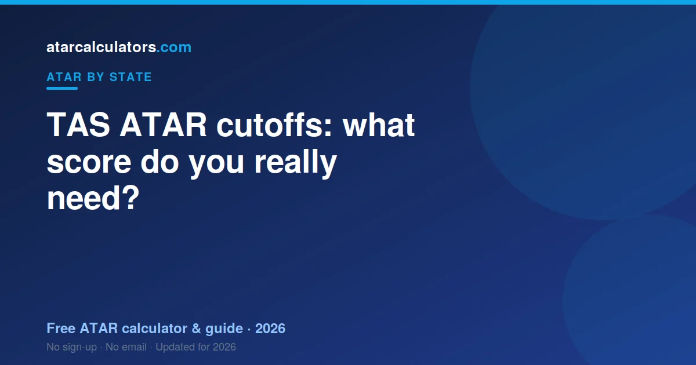
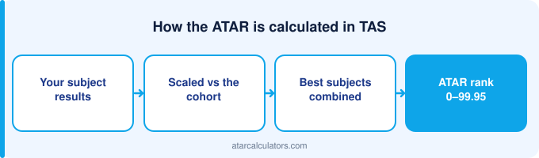

TAS ATAR cutoffs change by course and by year. Many University of Tasmania courses have accessible cutoffs, often between 65 and 80. Competitive courses need 90 or more. Medicine is the toughest, usually 95 and above, with extra steps like an interview. A cutoff is the lowest ATAR that got an offer last year, so treat it as a guide and confirm the current number with the university.
Key takeaways
- A cutoff is the lowest ATAR that received an offer last year, not a fixed pass mark.
- Many UTAS courses sit between 65 and 80, which is quite accessible.
- Competitive courses need 90+. Medicine usually needs 95+ plus extra steps.
- Cutoffs change every year with demand, so last year’s number is a guide only.
- UTAS offers early and guaranteed entry schemes for eligible students.
- Adjustment points can lift your selection rank above your raw ATAR.

How TAS ATAR cutoffs work
A cutoff is not a pass mark set in advance. It is the lowest ATAR, or selection rank, that still received an offer last year.
Demand sets the cutoff. If lots of strong students apply for a course, the cutoff rises. If fewer apply, it can fall. So the number moves each year.
This means the cutoff you see is a snapshot from last year. It is a good guide, but it is not a promise. Always check the current figure on the University of Tasmania course page.
What a cutoff really means
Students often mix up two numbers. The cutoff is the lowest offer. The median is the middle score of students who got in.
The median is usually higher than the cutoff. So if a course lists a cutoff of 75, many students who enrolled had higher ATARs than that.
The safe plan is to aim above the cutoff, not just to match it. That gives you a buffer if the cutoff rises this year.
Typical ATAR ranges by course
Here is a rough guide for the University of Tasmania. These are broad ranges, not exact cutoffs, so use them to sanity-check your goal:
- Arts, education, business and general science: often 65–80.
- Engineering, health science and nursing: often 75–90.
- Competitive courses like law: can reach 90+.
- Medicine: usually 95–99+, plus an interview and other steps.
Tasmania tends to have accessible entry for many courses, which can suit a wide range of students. Medicine and a few high-demand courses are the competitive exceptions. Confirm the current number for your exact course before you rely on it.
Medicine at the University of Tasmania
Medicine is the most competitive path in Tasmania. The University of Tasmania offers a well-known undergraduate medical degree for school leavers.
A high ATAR is only the first hurdle. You usually also attend an interview and meet other entry steps. A strong ATAR gets you considered, not guaranteed.
If medicine is your goal, plan early. Aim for top scaled scores in your best subjects, and read the exact entry steps on the university’s medicine page, because they can change.
Why UTAS entry can be accessible
One good thing about Tasmania is that many courses have accessible ATAR cutoffs. This opens university to a wide range of students.
The University of Tasmania also runs early and guaranteed entry schemes. Some offer you a place based on your Year 11 results or a school recommendation, before your final ATAR.
So even a mid-range ATAR can open many doors in Tasmania. It is worth looking at these schemes early in Year 12.
Getting in with a lower ATAR
A lower ATAR does not close the door. The University of Tasmania offers several pathways in.
Options include enabling and preparatory programs, starting in a related course and transferring, or entry based on other criteria.
- Enabling programs prepare you for a degree, then lead into it.
- Schools recommendation and early entry can offer a place before your ATAR.
- Transfer pathways let you move up after a strong first year.
So if your ATAR falls short of a course, ask the university about pathways. Many students reach the same degree by a slightly different route.
Adjustment and bonus points
The University of Tasmania can add adjustment points for some students. These lift your selection rank above your raw ATAR.
You might earn them for where you live, for subjects you studied, or for other eligible reasons. So a cutoff of 80 can still be within reach with an ATAR a little below it.
Check what you qualify for early. Our selection rank calculator shows how these points change your chances.
Why cutoffs change every year
Cutoffs shift for simple reasons. The number of applicants changes. The number of places changes. A course that trends one year can jump the next.
This is why you should never treat a single past cutoff as fixed. Look at the last few years if you can, and aim above the range to stay safe.
How to use cutoffs to plan
Start with the course you want, not the ATAR you expect. Find its recent cutoff. Then work backwards to the scaled scores you need.
Next, estimate your own ATAR with our TAS ATAR calculator. Compare it to the cutoff. If there is a gap, you still have time to close it, and our guide to improving your TAS ATAR shows how.
Cutoffs are guides, not guarantees
Published cutoffs are indicative, not fixed promises. They reflect the lowest ATAR admitted in a given year, which shifts with demand. A popular course can rise, while a course with fewer applicants can fall. So treat a cutoff as a target to clear comfortably, not a line to just scrape.
Because cutoffs move, aim a little above the figure you have seen, rather than exactly at it. A small buffer protects you against a cutoff rising, and a higher ATAR opens more courses and more flexibility if your plans change.
Lower-ATAR courses and pathways
Not every course requires a high ATAR. Many arts, business, science and general degrees at the University of Tasmania sit well below the most competitive cutoffs, and some accept ATARs in the 60s and 70s. So a strong course is within reach at a wide range of ATARs.
Beyond direct entry, pathways exist. UTAS offers enabling and foundation programs, and school-recommendation schemes, that can lead into a degree for students who do not meet a cutoff directly. So an ATAR below your target course is rarely the end of the road; there is usually a route in.
Applying through UTAS
Because Tasmania has no separate admissions centre, you apply to the University of Tasmania directly. UTAS assesses your application against its entry requirements, using your ATAR and any pathways you qualify for, and makes offers.
This is a more direct process than the multi-preference systems on the mainland. Still, apply for the courses you genuinely want, and check each one’s requirements and any guaranteed-entry thresholds, so you know exactly what you are aiming for.
Adjustment points and your rank
Many courses consider a selection rank rather than your raw ATAR alone. Adjustment factors, and school-recommendation schemes, can add to that rank or provide an alternative entry route for a specific course. Your ATAR stays the same, but the position used to consider you can be higher.
This can matter at the margin of a cutoff. Check the schemes UTAS offers for the courses you want, since eligibility varies. A selection rank calculator can show how adjustment points change your rank.
Why aiming a little above helps
Because cutoffs shift from year to year and estimates are not exact, it is wise to aim a little above the requirement for the course you want, rather than exactly at it. A small buffer protects you if a cutoff rises or your result lands slightly below expectation.
Aiming above also gives you options: a higher ATAR opens more courses and more flexibility if your plans change. So set your working target a few points above the requirement, and treat clearing it comfortably as the goal.
Common questions
What ATAR do I need for university in Tasmania?
It depends on the course. Many University of Tasmania courses have accessible cutoffs, often between 65 and 80. Competitive courses need 90 or more, and medicine usually needs 95 plus an interview. Check the current cutoff on the course page.
What ATAR do you need for the University of Tasmania?
It varies widely by course. Many courses sit in the 65 to 80 range, which is quite accessible. Competitive courses like law can reach 90, and medicine needs 95 and above.
What ATAR do you need for medicine in Tasmania?
Medicine at the University of Tasmania usually needs an ATAR of 95 or above, plus an interview and other entry steps. It is an undergraduate degree for school leavers, so plan early.
Does UTAS have guaranteed entry?
The University of Tasmania runs early and guaranteed entry schemes for eligible students. Some offer a place based on your Year 11 results or a school recommendation, before your final ATAR.
Is the cutoff the same as the average ATAR?
No. A cutoff is the lowest ATAR that received an offer. The average ATAR of students in a course is usually higher. Aim above the cutoff to be safe.
Can I get in with an ATAR below the cutoff?
Sometimes. Adjustment points can lift your selection rank above your ATAR. The University of Tasmania also offers enabling and transfer pathways that lead into a degree by a different route.
Do cutoffs go up every year?
Not always. Cutoffs rise when demand grows and fall when it drops. They move both ways, so check the last few years and aim above the range.
Where can I find the current cutoff?
On the University of Tasmania course page. Cutoffs change each year, so the official site is always more reliable than an old figure you find elsewhere.